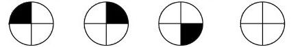
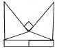
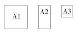
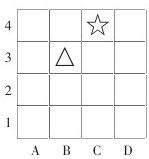
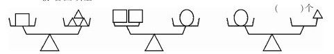

小学数学二年级（上册）综合能力及实践活动测试卷
综合能力部分
小朋友，试一试你的能力，先看一看，想一想，再做下面各题。
一、1.一辆汽车从甲地到乙地，来回速度都一样。去时小强看用了2个小时。返回时，小亮看用了120分钟，谁说得对？（）说得对
2.同学们排成一行打疫苗针，从左数和从右数，杨刚都是15名。打疫苗针共有学生（）人。
3.一根绳子对折后再对折，拧成一股粗绳子。这根粗绳子长为6米，这根绳子在没有对折前，长是（）米。
二、4.仔细观察下图，在第四幅图中应画出什么图形。

5.右边的图是由（）个正方形，（）个长方形，（）个三角形组成的。

6.如图：A1是A2的2倍，A2是A3的2倍。A1是A3的（）倍。

三、7.如果△的位置记做B3，那么，☆的位置记做（）

8.看图填空

9.□+△=8
□=（）
□-△=2
△=（）
四、10.小红家有4人，吃饭时需要准备（）根筷子。
算式：
11.爸爸、妈妈领着小明走银川，每张车票8元，一共要用（）元。
算式：
12.把一根长6分米的木条，锯了两次，平均每段长（）分米。
算式：
实践活动部分
1.什么事情可能发生？
2.你1分钟大约能跑多少米？
3.你有哪些确定方向的方法？